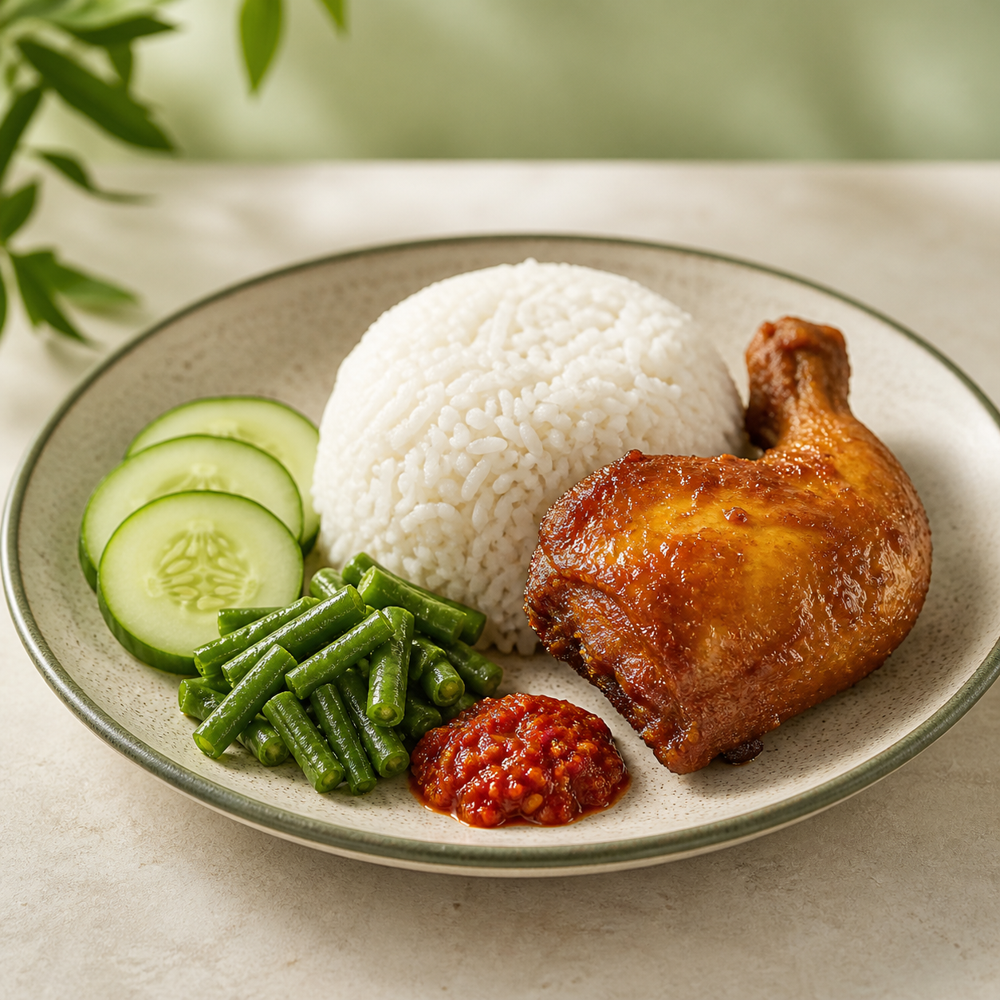
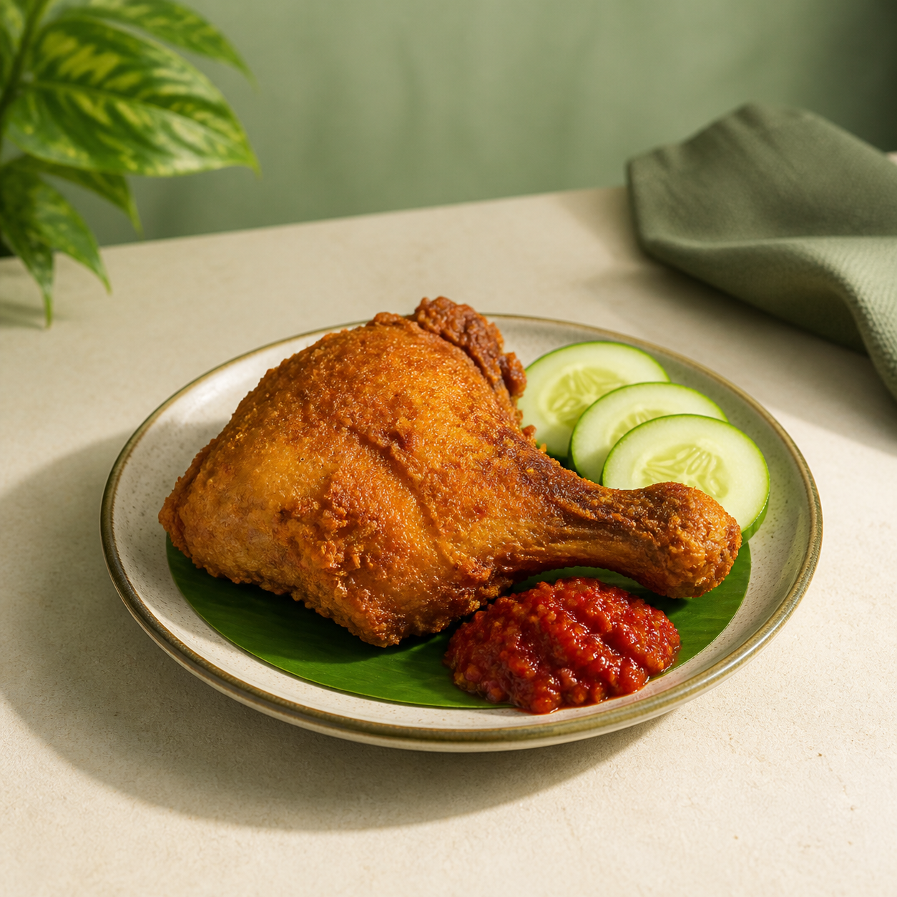
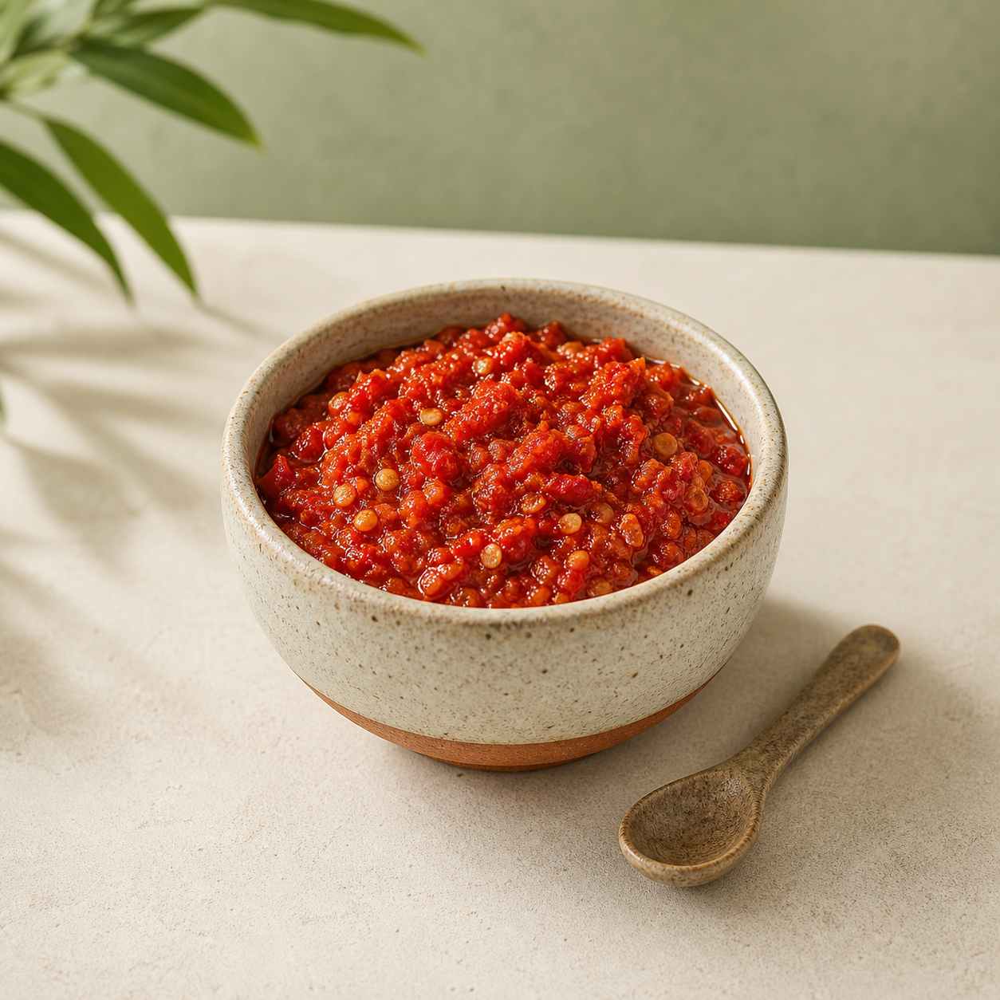

Skenario uji utama
55.000 rupiah—dihitung dari harga yang tersimpan di Convex, bukan tebakan AI.3 × 15rb+2 × 5rb=55rb
Skenario uji utama
55.000 rupiah—dihitung dari harga yang tersimpan di Convex, bukan tebakan AI.


Lima Action ID yang stabil
create_orderOrder, stok, dan log berubah bersama—atau tidak sama sekali.
list_pending_ordersDaftar order yang masih perlu diselesaikan.
update_orderPemenuhan dan pembayaran, setelah konfirmasi.
get_low_stock_itemsItem pada atau di bawah ambang tersimpan.
get_daily_summaryOrder, omzet tercatat, pending, belum bayar, dan stok menipis dari data aktual.